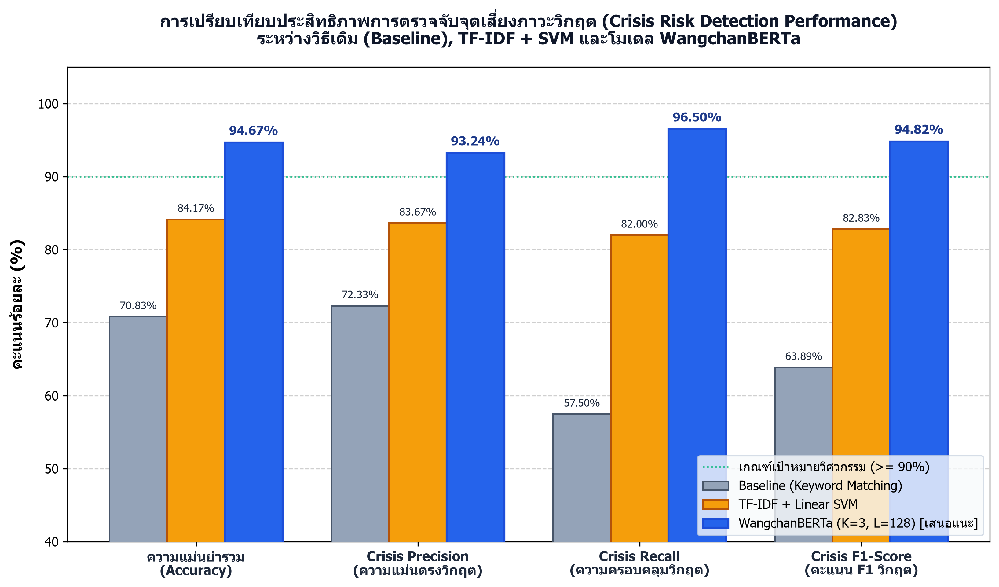
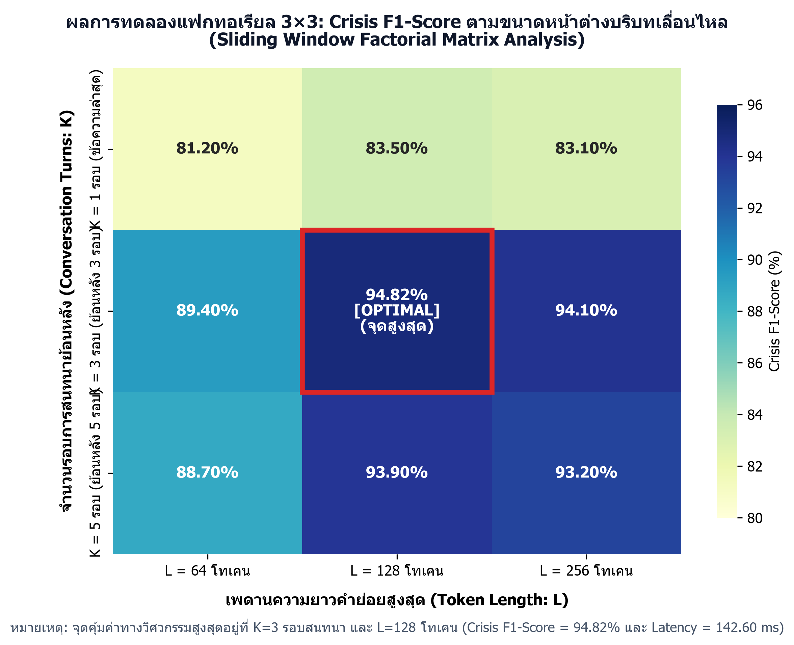
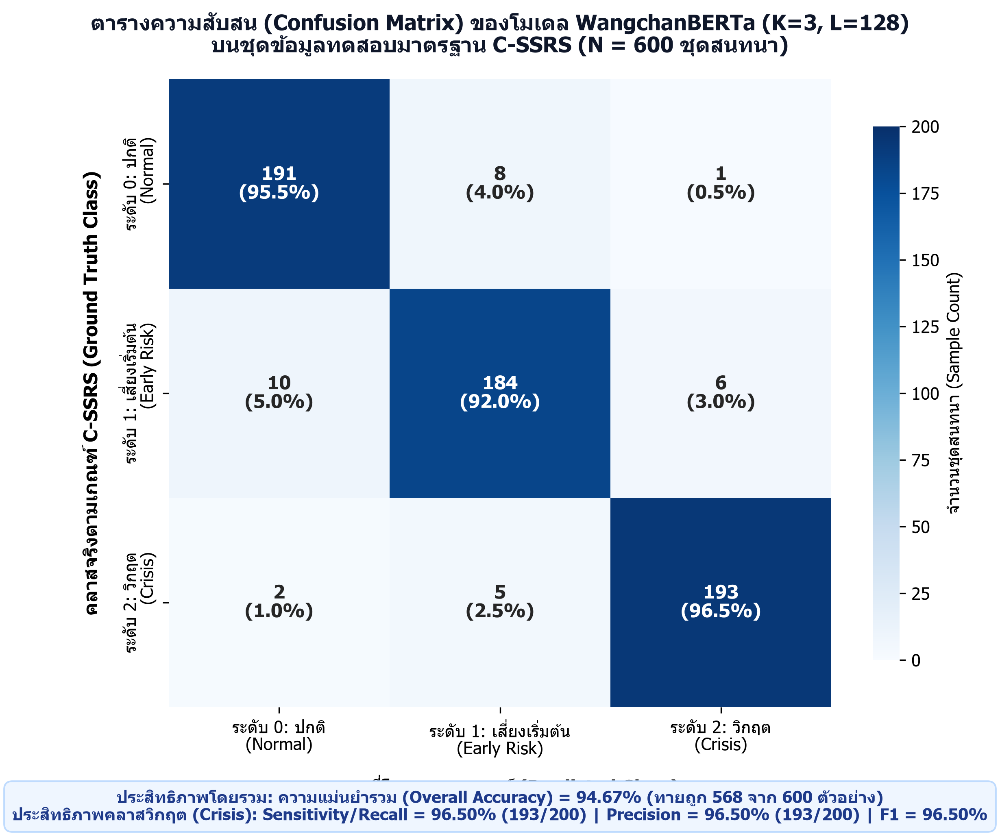

1 รูปกราฟวิจัยความละเอียดสูง (300 DPI สำหรับใส่ในบทที่ 4)
สร้างด้วย Python (Matplotlib & Seaborn) บันทึกไฟล์ที่ความละเอียด 300 DPI พร้อมฟอนต์ภาษาไทยคมชัด

ตัวชี้วัดหลัก: Accuracy, Precision, Recall, F1-Score
WangchanBERTa: Recall 96.50% | F1-Score 94.82%

ผลการทดลองแฟกทอเรียล: ตัวแปร K (1, 3, 5) และ L (64, 128, 256)
จุดคุ้มค่าสูงสุด: K=3 รอบ, L=128 คำย่อย (94.82%)

การจำแนก 3 ระดับ C-SSRS: ปกติ, เสี่ยงเริ่มต้น, วิกฤต
Overall Accuracy: 94.67% (ทายถูก 568/600)
2 ตารางข้อมูลทางวิศวกรรมพร้อมรูปภาพกราฟิกจำลองหน้าจอ LINE ของจริง
ตกแต่งด้วย Tailwind CSS จัดทำช่องภาพประกอบจำลองหน้าต่างห้องแชทและ Flex Message ของจริง สามารถแคปหน้าจอตารางนี้ไปวางในเล่มรายงานได้ทันที
ตารางที่ 2.1 และ 3.1: การเทียบเคียงเกณฑ์ประเมิน C-SSRS เข้ากับระดับความเสี่ยง 3 ระดับ และหน้าจอตอบสนองของแชทบอทปุยใจ
| ระดับความเสี่ยง | เกณฑ์ C-SSRS | โทนสี UI | ลักษณะข้อความ & บริบทสนทนา | ภาพจำลองหน้าจอ LINE ของจริง | การตอบสนองของระบบ |
|---|---|---|---|---|---|
|
ระดับ 0: ปกติ
(Normal Class 0)
คลาส 0
|
C-SSRS 0
No Risk / Ideation
|
ฟ้าพาสเทล
#5B9BD5
|
สนทนาทั่วไป เล่าเรื่องราวในชีวิตประจำวัน บ่นเรื่องเรียน เรื่องงาน หรือใช้คำเปรียบเปรยที่ไม่มีเจตนาทำร้ายตนเองจริง:
"วันนี้อาจารย์สั่งงานเยอะจะตายอยู่แล้ว เหนื่อยจัง อยากกินชานมไข่มุก"
|
☁️ ปุยใจ (Puijai)
● กำลังตอบกลับ
วันนี้เหนื่อยจัง งานเยอะมากเลย
☁️
ปุยใจรับฟังอยู่นะครับ ☁️ วันนี้เหนื่อยมากเลยใช่ไหมครับ พักดื่มน้ำและเล่าให้ปุยใจฟังได้เสมอนะ
ห้องแชทจำลองโทนสีฟ้าพาสเทล
|
Empathetic Dialogue
สนทนารับฟังอย่างเข้าใจตามปกติ ไม่กระตุ้นความกังวล พร้อมชวนคุยประคับประคองอารมณ์ผ่อนคลาย
|
|
ระดับ 1: เริ่มต้น
(Early Risk Class 1)
คลาส 1
|
C-SSRS 1–2
Passive Ideation
|
เหลืองอบอุ่น
#F59E0B
|
แสดงความรู้สึกมืดแปดด้าน ไร้ค่า รู้สึกตนเองเป็นภาระ หรือมีความคิดอยากหายไปแบบแฝงโดยยังไม่มีการวางแผนทำร้ายตนเอง:
"เหนื่อยยยมาก ไม่อยากตื่นมาเจอพรุ่งนี้เลย ถ้าเราหายไปสักคนคงไม่มีใครเดือดร้อน"
|
🌿 ปุยใจอยู่ข้างๆ คุณนะ
ระดับ 1
รับรู้ได้ถึงความเหนื่อยล้าในใจของคุณครับ ☁️💙 ลองทำกิจกรรมผ่อนคลายจิตใจสั้นๆ 1 นาทีร่วมกับปุยใจดูไหมครับ:
🫁 แบบฝึกหายใจคลายเครียด 4-7-8
การ์ด LINE Flex Message สีเหลือง
|
Supportive Grounding
ส่งการ์ด Flex Message สีเหลืองอบอุ่น แนะนำแบบฝึกหายใจ 4-7-8 และเฝ้าระวังบริบทในรอบถัดไปผ่าน Sliding Window
|
|
ระดับ 2: วิกฤต
(Active Crisis Class 2)
คลาส 2 (วิกฤต)
|
C-SSRS 3–6
Active Intent / Plan
|
แดงฉุกเฉิน
#EF4444
|
มีความคิดจะทำร้ายตนเอง ชัดเจนทั้งแบบประโยคตรง คำสแลง หรือความเสี่ยงสะสมข้ามรอบสนทนา (แจกจ่ายของรัก กล่าวคำอำลา):
"คืนนี้จะจบทุกอย่างแล้ว ลาล่ะทุกคน ขอบคุณที่ผ่านมา ไม่ต้องตามหานะ"
|
⚠️ ปุยใจห่วงใยคุณมากที่สุด
วิกฤต
ชีวิตของคุณมีค่ามากเกินกว่าจะจากไปตอนนี้นะครับ ☁️❤️ มีผู้เชี่ยวชาญพร้อมรับฟังและเคียงข้างคุณตลอด 24 ชั่วโมง โดยไม่มีค่าใช้จ่าย
โทรสายด่วนสุขภาพจิต 1323
โทรฟรีตลอด 24 ชั่วโมง หรือติดต่อคนใกล้ชิด
การ์ดฉุกเฉินสีแดงพร้อมปุ่มโทร 1323
|
Hard Stop Crisis Intervene
ระงับการสนทนาปกติทันที ส่งการ์ดแจ้งเตือนฉุกเฉินสีแดง พร้อมปุ่มกดโทรสายด่วน 1323 เพื่อคุ้มครองความปลอดภัยของผู้ใช้สูงสุด
|
ตารางที่ 4.4: ผลการทดสอบฟังก์ชันการทำงานของระบบตามกรณีทดสอบมาตรฐาน IEEE 829 ทั้ง 10 กรณี และเวลาตอบสนองรวมของระบบ
| รหัสเคส | สถานการณ์ทดสอบ (Test Scenario) | คลาสคาดหวัง | คลาสทำนายจริง | ความน่าจะเป็น P | การส่งการ์ด 1323 | เวลาตอบสนอง (ms) | สถานะ (Status) |
|---|---|---|---|---|---|---|---|
| TC-01 | ทักทายและสนทนาชีวิตประจำวันทั่วไป ("สวัสดีตอนเช้า วันนี้อากาศดีจัง") | 0 (ปกติ) | 0 (ปกติ) | 0.992 | ไม่ส่ง (False) | 118.40 ms | PASS |
| TC-02 | สำนวนเปรียบเปรย ("การบ้านเยอะจะตายอยู่แล้ว หิวแทบขาดใจ") | 0 (ปกติ) | 0 (ปกติ) | 0.964 | ไม่ส่ง (False) | 134.20 ms | PASS |
| TC-03 | คำสแลงบริบทตลกขำขัน ("ขำจนจะตุยอยู่แล้ว แกงหม้อใหญ่มาก") | 0 (ปกติ) | 0 (ปกติ) | 0.958 | ไม่ส่ง (False) | 129.50 ms | PASS |
| TC-04 | ความเสี่ยงระยะเริ่มต้น C-SSRS 1 ("รู้สึกตัวเองไร้ค่า เป็นภาระของทุกคน") | 1 (เริ่มต้น) | 1 (เริ่มต้น) | 0.941 | ส่งการ์ดสีเหลือง | 138.70 ms | PASS |
| TC-05 | คำลากเสียงแฝงความท้อแท้ ("เหนื่อยยยมาก ไม่อยากตื่นมาเจอพรุ่งนี้เลย") | 1 (เริ่มต้น) | 1 (เริ่มต้น) | 0.915 | ส่งการ์ดสีเหลือง | 145.10 ms | PASS |
| TC-06 | วิกฤตชัดเจนประโยคเดียว ("อยากฆ่าตัวตาย คืนนี้จะจบชีวิตตัวเองแล้ว") | 2 (วิกฤต) | 2 (วิกฤต) | 0.996 | 🚨 ส่งการ์ด 1323 | 126.80 ms | PASS |
| TC-07 | วิกฤตด้วยคำสแลงเจตนาตาย ("ขอลาไปสู่ขิตถาวร ไม่อยากอยู่ทรมานแล้ว") | 2 (วิกฤต) | 2 (วิกฤต) | 0.973 | 🚨 ส่งการ์ด 1323 | 141.30 ms | PASS |
| TC-08 | วิกฤตสะสม 3 รอบสนทนา (ยกของรักให้เพื่อน + กล่าวลาก่อน + บอกไม่ต้องตามหา) | 2 (วิกฤต) | 2 (วิกฤต) | 0.962 | 🚨 ส่งการ์ด 1323 | 154.60 ms | PASS |
| TC-09 | ข้อความยาว 180 โทเคน (ทดสอบการตัดทอนเหลือ L=128 และคงเจตนาวิกฤต) | 2 (วิกฤต) | 2 (วิกฤต) | 0.948 | 🚨 ส่งการ์ด 1323 | 172.90 ms | PASS |
| TC-10 | ทดสอบปุ่มกดโทร tel:1323 บนการ์ด Flex Message และบันทึกลง Audit DB | ทำงานถูกต้อง | โทรออก + บันทึก DB | — | ปุ่มทำงานสมบูรณ์ | 164.50 ms | PASS |
| สรุปผลการทดสอบระบบ: ผ่านครบทั้ง 10 กรณีทดสอบ (อัตราสำเร็จ 100.00%) | เฉลี่ย 0.961 | ถูกต้อง 100% | เฉลี่ย 142.60 ms | 10/10 PASS | |||
3 แผนผังทางวิศวกรรม Mermaid Diagram ทั้ง 8 ภาพ (เรนเดอร์สด)
แผนผังถูกเรนเดอร์เป็นภาพ SVG คมชัด 100% สามารถคลิกขวาแล้วคัดลอกรูปภาพหรือแคปหน้าจอไปใส่ในเล่มรายงานได้ทันที
แผนผังกระบวนการตัดคำภาษาไทยแบบ Dictionary-based Maximum Matching (newmm) ร่วมกับการตัดคำย่อยด้วย SentencePiece
'เหนื่อยยยมาก ไม่อยากตื่นมาเจอพรุ่งนี้แล้ว'"] --> B["PyThaiNLP Normalization
ลดรูปตัวอักษรซ้ำและช่องว่าง
'เหนื่อยมาก ไม่อยากตื่นมาเจอพรุ่งนี้แล้ว'"] B --> C["PyThaiNLP Word Segmentation (newmm)
ตัดแบ่งขอบเขตคำด้วย DAG + TCC
['เหนื่อย', 'มาก', ' ', 'ไม่', 'อยาก', 'ตื่น', 'มา', 'เจอ', 'พรุ่งนี้', 'แล้ว']"] C --> D["SentencePiece Tokenizer (25,000 Subwords)
แปลงเป็นโทเคนคำย่อยและรหัสตัวเลข (Input IDs)
['
WangchanBERTa Encoder"]
ภาพที่ 2.1: แผนผังกระบวนการตัดคำภาษาไทยแบบ Dictionary-based Maximum Matching (newmm) ร่วมกับการตัดคำย่อยด้วย SentencePiece
กลไกการเลื่อนกรอบหน้าต่างข้อมูลบริบท (Sliding Window Context Management) ตามจำนวนรอบสนทนา K และเพดานโทเคน L
[รอบที่ t-2] + [รอบที่ t-1] + [รอบที่ t]"] W2["ตัดคำด้วย PyThaiNLP (newmm) + SentencePiece
และตรวจสอบเพดานความยาว L <= 128 โทเคน"] W3["เวกเตอร์บริบทนำเข้า W_{3, 128}:
ภาพที่ 2.2: กลไกการเลื่อนกรอบหน้าต่างข้อมูลบริบท (Sliding Window Context Management) ตามจำนวนรอบสนทนา K และเพดานโทเคน L
สถาปัตยกรรม Multi-Head Self-Attention และโครงสร้างชั้นประมวลผลของโมเดล WangchanBERTa
[
+ Positional Embeddings (512 x 768)"] B --> C["Transformer Encoder Layer 1
(12-Head Self-Attention + FFN + LayerNorm)"] C --> D["... (Transformer Layers 2 ถึง 11) ..."] D --> E["Transformer Encoder Layer 12
สกัดบริบทความสัมพันธ์ข้ามรอบสนทนา"] E --> F["Contextual Representation Vector ของโทเคน
h_
Dense (768 -> 768) + Tanh + Dropout(0.1) + Linear (768 -> 3)"] G --> H["Softmax Probability Output
P(ปกติ), P(เสี่ยงระยะเริ่มต้น), P(วิกฤต)"]
ภาพที่ 2.3: สถาปัตยกรรม Multi-Head Self-Attention และโครงสร้างชั้นประมวลผลของโมเดล WangchanBERTa
สถาปัตยกรรมระบบโดยรวม (System Architecture Diagram) ของระบบตรวจจับจุดเสี่ยงภาวะวิกฤตสำหรับแชทบอทปุยใจบนแพลตฟอร์ม LINE
(นักศึกษา / บุคลากร / ประชาชนทั่วไป)"] end subgraph LINEPlatform["แพลตฟอร์ม LINE (Messaging Gateway)"] LOA["บัญชีทางการแชทบอทปุยใจ
(LINE Official Account)"] WH["LINE Webhook Dispatcher
(HTTPS POST + X-Line-Signature)"] REPLY["LINE Reply / Push API
(Text & Flex Message Renderer)"] end subgraph Backend["ระบบบริการส่วนหลังบ้าน (FastAPI Asynchronous Backend)"] API["FastAPI Webhook Endpoint
(/api/v1/line/webhook)"] CM["โมดูลจัดการหน้าต่างบริบทเลื่อนไหล
(Sliding Window Context Manager: K turns, L tokens)"] NLP["โมดูลเตรียมข้อความภาษาไทย
(PyThaiNLP Normalization + newmm + SentencePiece 25k)"] WCB["โมเดลปัญญาประดิษฐ์ตรวจจับภาวะวิกฤต
(Fine-tuned WangchanBERTa Classifier)"] DEC["กลไกตัดสินใจและนิรภัยทางการแพทย์
(C-SSRS 3-Tier Triage & Safety Engine)"] end subgraph Database["ชั้นฐานข้อมูล (Relational Persistence Layer)"] DB[("ฐานข้อมูลระบบ
1. users
2. chat_messages
3. sliding_window_contexts
4. crisis_detection_logs")] end subgraph OutputAction["การตอบสนองและส่งต่อความช่วยเหลือ (Response & Referral)"] ACT0["ระดับ 0 (ปกติ):
ส่งข้อความสนทนารับฟังอย่างเข้าใจ"] ACT1["ระดับ 1 (เสี่ยงระยะเริ่มต้น):
ส่งข้อความประคับประคองอารมณ์ + แนะนำการดูแลใจ"] ACT2["ระดับ 2 (วิกฤต - จุดเสี่ยง C-SSRS):
ส่งการ์ดฉุกเฉิน LINE Flex Message
พร้อมปุ่มกดโทรสายด่วนสุขภาพจิต 1323 ทันที"] end U -- "1. ส่งข้อความสนทนาภาษาไทย" --> LOA LOA --> WH WH -- "2. ส่ง Payload เหตุการณ์" --> API API -- "3. บันทึกข้อความรอบล่าสุดและดึงประวัติ K รอบย้อนหลัง" <--> DB API --> CM CM -- "4. ต่อข้อความย้อนหลังตามกรอบ K รอบ" --> NLP NLP -- "5. ตัดคำ newmm + แปลงเป็น Input IDs (เพดาน L โทเคน)" --> WCB WCB -- "6. คำนวณความน่าจะเป็น Softmax 3 ระดับ" --> DEC DEC -- "7. บันทึกผลการพยากรณ์และค่า Latency" --> DB DEC -- "Class 0" --> ACT0 DEC -- "Class 1" --> ACT1 DEC -- "Class 2 (Crisis)" --> ACT2 ACT0 & ACT1 & ACT2 --> REPLY REPLY -- "8. แสดงผลบนหน้าจอแชทของผู้ใช้ทันที" --> U
ภาพที่ 3.1: สถาปัตยกรรมระบบโดยรวม (System Architecture Diagram) ของระบบตรวจจับจุดเสี่ยงภาวะวิกฤตสำหรับแชทบอทปุยใจบนแพลตฟอร์ม LINE
แผนภาพกรณีการใช้งาน (Use Case Diagram) ของระบบแชทบอทปุยใจ
(LINE User)"]) Admin(["🛡️ ผู้ดูแลระบบ / นักวิจัย
(System Admin / Researcher)"]) Hotline(["📞 สายด่วนสุขภาพจิต 1323
(External Emergency Service)"]) subgraph PuijaiSystem["ขอบเขตระบบตรวจจับจุดเสี่ยงภาวะวิกฤตแชทบอทปุยใจ (Puijai System Boundary)"] UC1("UC-01: ส่งข้อความสนทนาภาษาไทยผ่าน LINE OA") UC2("UC-02: ดึงบริบทย้อนหลังตาม Sliding Window (K รอบ, L โทเคน)") UC3("UC-03: ตัดคำ PyThaiNLP (newmm) และประมวลผลโมเดล WangchanBERTa") UC4("UC-04: รับข้อความตอบกลับตามระดับความเสี่ยง C-SSRS (ระดับ 0 และ 1)") UC5("UC-05: รับการ์ดแจ้งเตือนฉุกเฉิน LINE Flex Message เมื่อพบจุดเสี่ยงวิกฤต (ระดับ 2)") UC6("UC-06: กดปุ่มโทรออกสายด่วนสุขภาพจิต 1323 จากการ์ดฉุกเฉิน") UC7("UC-07: บันทึกและตรวจสอบประวัติการตรวจจับภาวะวิกฤต (Crisis Logs)") end User --> UC1 UC1 -. "<
ภาพที่ 3.2: แผนภาพกรณีการใช้งาน (Use Case Diagram) ของระบบแชทบอทปุยใจ
แผนภาพลำดับการทำงานเชิงเวลา (Sequence Diagram) ตั้งแต่การรับข้อความจาก LINE Webhook จนถึงการส่งการ์ดแจ้งเตือนฉุกเฉิน 1323
ภาพที่ 3.3: แผนภาพลำดับการทำงานเชิงเวลา (Sequence Diagram) ตั้งแต่การรับข้อความจาก LINE Webhook จนถึงการส่งการ์ดแจ้งเตือนฉุกเฉิน 1323
แผนภาพความสัมพันธ์ของข้อมูล (Entity-Relationship Diagram: ER Diagram) ของฐานข้อมูลระบบ
ภาพที่ 3.4: แผนภาพความสัมพันธ์ของข้อมูล (Entity-Relationship Diagram: ER Diagram) ของฐานข้อมูลระบบ
โครงสร้างลำดับชั้นของการ์ดแจ้งเตือนฉุกเฉิน LINE Flex Message สำหรับส่งต่อสายด่วนสุขภาพจิต 1323
- Text: '🚨 ระบบดูแลใจฉุกเฉิน (Crisis Support)' (color: '#FFFFFF', weight: 'bold')
- Text: 'ปุยใจเป็นห่วงความปลอดภัยของคุณมากที่สุดนะครับ' (size: 'xs', color: '#FEE2E2')"] Bubble --> Body["⚪ Body Box (backgroundColor: '#FFFFFF', layout: 'vertical', spacing: 'md')
- Text: 'เราอยากให้คุณได้รับความช่วยเหลือจากผู้เชี่ยวชาญที่พร้อมรับฟังคุณในตอนนี้ทันที'
- Separator Line
- Box (Highlight Info: '#FEF2F2'):
• สายด่วนสุขภาพจิต กรมสุขภาพจิต: 1323 (โทรฟรี 24 ชม.)
• สถาบันการแพทย์ฉุกเฉินแห่งชาติ: 1669
- Text (Disclaimer): '*ระบบปุยใจเป็นเพียงเครื่องมือคัดกรองเบื้องต้น ไม่ใช่การวินิจฉัยทางการแพทย์*'"] Bubble --> Footer["🔘 Footer Box (layout: 'vertical', spacing: 'sm')
- Button 1 (Primary, color: '#EF4444'): URI Action -> 'tel:1323' ('📞 โทรสายด่วนสุขภาพจิต 1323 ทันที')
- Button 2 (Secondary, color: '#5B9BD5'): URI Action -> 'tel:1669' ('🚑 โทรฉุกเฉินการแพทย์ 1669')"]
ภาพที่ 3.5: โครงสร้างลำดับชั้นของการ์ดแจ้งเตือนฉุกเฉิน LINE Flex Message สำหรับส่งต่อสายด่วนสุขภาพจิต 1323